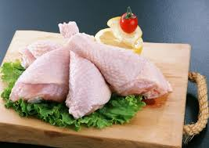
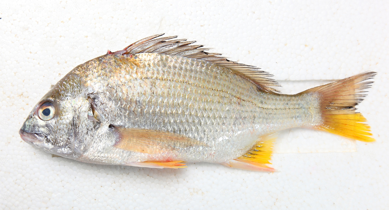

| 圖片 | 種類 | 營養價值 | 價格(斤) | 數量 | 特殊要求 |
|---|---|---|---|---|---|
| 豬肉 | 豬肉肥瘦差別較大，肥肉中脂肪含量高，蛋白質含量少，多吃容易導致高血脂和肥胖等疾病;蛋白質大部分集中在瘦肉中，而且瘦肉中還含有血紅蛋白，可以起到補鐵的作用，能夠預防貧血。肉中的血紅蛋白比植物中的更好吸收，因此，吃瘦肉補鐵的效果要比吃蔬菜好。由於豬肉的纖維組織比較柔軟，還含有大量的肌間脂肪，因此比牛肉更好消化吸收。中醫上認為，多吃豬肉中的瘦肉有滋陰潤燥的作用，對熱病傷津、燥咳、便秘等疾病都有一定的治療效果。 | $61 |
|
||
| 羊肉 | 羊肉有助元陽、補精血、療肺虛之功效，對氣喘、氣管炎、肺病及虛寒的病人相當有益。還能益腎壯陽，補虛抗寒，強健身體，是冬令的滋養食療珍品。但需注意的是，羊肉畢竟性偏溫熱，並非人人皆宜。陰虛火旺、咳嗽痰多、消化不良、關節炎、濕疹及發熱者應忌食。 | $30 |
|
||
| 牛肉 | 凡身體虛弱而智力衰退者，吃牛肉最為相宜。牛肉蛋白質的氨基酸組成比豬肉更接近人體需要，能提高機體抗病能力，對生長髮育及手術後、病後調養的人在補充失血、修復組織等方面特別適宜。但牛肉的肌肉纖維較粗糙不易消化，有很高的膽固醇和脂肪，故老人、幼兒及消化力弱的人不宜多吃。 | $28 |
|
||
| 鴨肉 | 鴨肉中富含女性常缺乏的鐵質，以及維持活力不可或缺的維他命B1、B2和Ａ等營養素，其營養價值雖因不同的品種多少有些不同，但其中的差異並不大。 | $6 |
|
||
|  | 雞肉 | 這裡說的雞肉，是指去皮的雞肉，因為雞的脂肪幾乎都在雞皮。每100克去皮雞肉中含有24克蛋白質，卻只有0.7克脂肪。雞肉對營養不良、畏寒怕冷、乏力疲勞、月經不調、貧血、虛弱等症有很好的食療作用。 | $50 |
|
|
|  | 魚 | 魚肉具有營養豐富、口感好和易於消化吸收等優點。 研究發現，魚肉中富含多種維生素(如維生素A、維生素D和B族維生素等)、酶類、礦物質(如鈣、磷、鉀、碘、鋅、硒等)、不飽和脂肪酸及優質蛋白等營養成分。 魚肉可分為暗色魚肉和白色魚肉兩種。 暗色魚肉中含有的營養物質較多，味道較腥。 | $220 | 備註 | |
| 蝦 | 蝦中的微量元素極為豐富，含鈣、鋁、鐵、錳、銅、鈷、鎳、鋅、碘、氯、硫等，都是人體所必需的。 | $20 | 備註 |
總計: